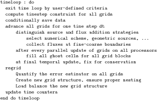
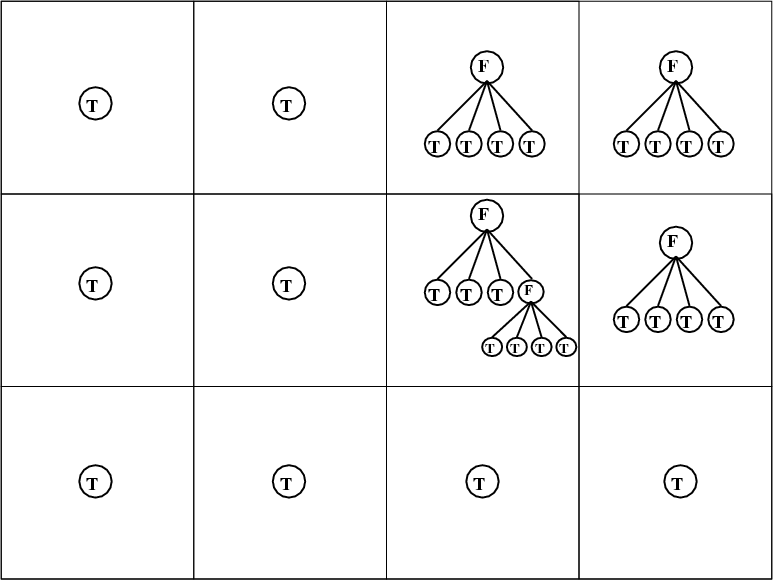
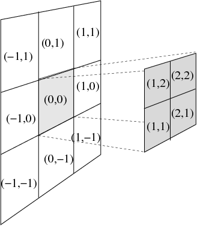
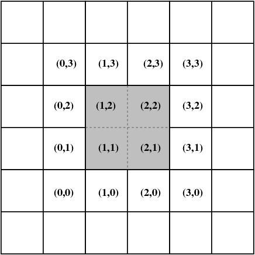
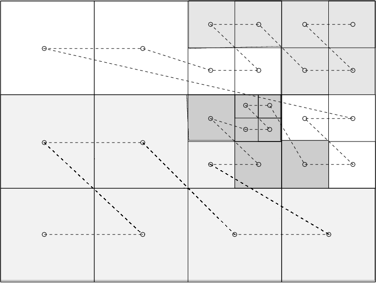
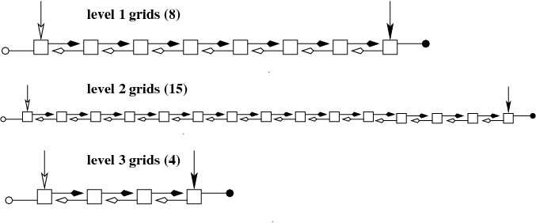

Introduction
This document briefly describes the AMR-related features in MPI-AMRVAC. The different options can be set in the meshlist part (see Setting parameters) of the amrvac.par file. For a more extensive description, you can read the article 'Parallel, grid-adaptive approaches for relativistic hydro and magnetohydrodynamics', R. Keppens, Z. Meliani, A.J. van Marle, P. Delmont, A. Vlasis, & B. van der Holst, 2011, JCP.* doi:10.1016/j.jcp.2011.01.020.
MPI-AMRVAC uses a standard block-based, octree AMR scheme, where we have blocks of user-controlled dimension (set by the block_nx1, block_nx2, block_nx3) in a hierarchically nested manner. To simplify the parallelization, we gave up flexibility to allow different sized refinement ratios between grid levels, fixing it to 2. Also, we now use the same time step for all levels. A generic skeleton code, generic enough to hold for any AMR code having similar restrictions, is shown below.

Some more info follows on the different aspects involved.
Important (global) parameters
Some important global parameters are in the module mod_global_parameters.t. In particular, note that the maximum number of blocks per processor is the parameter max_blocks, and the maximum number of levels is the parameter nlevelshi. The latter is default set to 20. If your want to run with more levels, and/or allow for more grids per processor, you need to change their value and recompile. The number of levels set in the par file as refine_max_level must always be smaller or equal to nlevelshi. This nlevelshi also returns in those parameters that are defined per level, such as limiter which needs to be set for all (default) 20 levels.
AMR criteria
This in essence describes the module errest.t, or at least its most essential aspets.
The block-tree nature implies that a decision for refining/coarsening is to be made on a block-by-block basis. This automated block-based regridding procedure involves 3 steps:
(1) consider all blocks at level 1< l< _refine_max_level_ , with _refine_max_level_ the maximal grid level selected; (2) quantify the local error E_\xx at each gridpoint in a certain grid block; (3) if any point has this error exceeding a user-set threshold _refine_threshold(l)_, refine this block (and ensure proper nesting); (4) if all points have their error below a user-set fraction of the threshold _derefine_ratio(l)_ used in the previous step, coarsen the block (for l>1).
The local error estimator can be one of four options, selected by refine_criterion, each possibly augmented with user-defined criteria. For refine_criterion=0, only refinement based on usr_refine_grid is active. Any of the other 3 estimators use a user-selected subset of the conserved or auxiliary variables (or even variables that are computed dynamically at the time of regridding), through the formula 
The indices included are user-identified with the w_refine_weight array, where the sum of weights of all variables should equal to 1. The estimated error is a weighted sum of contributions from all variables with non-zero weight.
For refine_criterion=1, a local comparison merely employs the availability of the t^{n-1} and t^n solution vectors. It estimates the local relative variable errors as 
This is obviously computationally cheaper, but has the disadvantage that it in essence uses historical info, which may be insufficient for rapidly moving, strong shock cases. In our experience, local error estimators work satisfactorily on a variety of test problems, but may need an added, user-set buffer zone around each grid point flagged for refinement in this manner. This zone sets the buffer width in numbers of grid cells (per dimension) nbufferx1,... about flagged grid cells.
For refine_criterion=2 or refine_criterion=3, we select a Lohner type [R. Lohner, An adaptive finite element scheme for transient problems in CFD, Comp. Meth. App. Mech. Eng. 61, 323 (1987)] prescription as also used in the PARAMESH library or the FLASH3 code. In our experience, it does not require any of the buffering just discussed, and is computationally efficient as it employs only instantaneous values from t^n. It in essence discretizes a weighted second derivative in each grid point.
The refine_criterion=3 is also Lohner prescription, which writes in formulae as 
where the operators mean a central difference and a sum, per dimension. The wave filter parameter is set per level, and defaults as amr_wavefilter(1:nlevelshi)=1.0d-2.
Data structures
The data structures are defined in mod_physicaldata.t and mod_forest.t, you can inspect them for learning more details.
We provide details on useful data structures. All of these are suited for any curvilinear coordinate system, and merely reflect the tree structure of the block-AMR. We implicitly assume a fixed refinement ratio of two. Schematic figures for a 2D Cartesian case generalize straightforwardly to higher or lower dimensionality.
The overall domain is considered 'rectangular', i.e. bounded by coordinate pairs xprobmin1,xprobmax1, ... in each dimension. On the lowest grid level l=1, one controls the coarsest resolution as well as a suitable domain decomposition, by specifying both the total number of level 1 grid cells domain_nx1, ... along with the individual block size per dimension block_nx1, ..., which exclude the ghost cells. The total cell number must be an integer multiple of the block size, so e.g., domain_nx1=4 block_nx1.
A hypothetical 2D domain is shown below, which corresponds to a domain where 4 by 3 blocks on level 1 are exploited in this domain decomposition, and where local refinement was activated in 4 out of these level l=1 blocks, here in the top right domain corner, as well as in one level l=2 grid.  Global, integer grid indices are introduced per dimension, in a manner where knowledge of these grid indices, combined with AMR level knowledge, instantly allows one to localize the grid when needed. Following the figure, the grid on level l=2 indicated by global grid indices (5,3) is indeed the fifth grid block horizontally, and the third vertically, when the domain would be resolved fully with level l=2 blocks. The total amount of grid blocks per dimension, per level l, is stored in ng^D(l), and the actual length of a grid block on level l, per dimension, is dg^D(l).
Global, integer grid indices are introduced per dimension, in a manner where knowledge of these grid indices, combined with AMR level knowledge, instantly allows one to localize the grid when needed. Following the figure, the grid on level l=2 indicated by global grid indices (5,3) is indeed the fifth grid block horizontally, and the third vertically, when the domain would be resolved fully with level l=2 blocks. The total amount of grid blocks per dimension, per level l, is stored in ng^D(l), and the actual length of a grid block on level l, per dimension, is dg^D(l).
The bottom figure reflects the tree representation of the same hypothetical grid hierarchy, where the presence of a grid leaf at a certain grid level is identified through a boolean variable. As indicated before, the total number of active grid leafs nleafs may change from timestep to timestep. This tree info is stored in the structure tree_root(ig^D(l)), which knows about the global grid index through tree_root(ig^D(l))nodeig^D, the level tree_root(ig^D(l))nodelevel, the processor on which it resides through the integer tree_root(ig^D(l))nodeipe, and its presence or absence in the logical tree_root(ig^D(l))nodeleaf. 
Various extra indices are helpful to traverse the tree structure. Local grid indices across AMR levels are schematically given below, which are used to identify the directional neighbours, as well as the children and parent blocks. These are used to realize and facilitate the possible interprocessor communication patterns, which are schematically shown at right.




The directional neighbours of a grid block are shown for a 1D, 2D and 3D case in the picture below. 
For parallelization, we adopted a fairly straightforward Z-order or Morton- order space filling curve (SFC). For the same hypothetical grid structure shown previously, the Morton space-filling curve is illustrated below, along with the resulting distribution of these 27 grid blocks on 4 CPUs. Load-balancing is done after every timestep, following the adaptive remeshing. When exploiting N_p CPUs, our strategy for load balancing merely ensures that each CPU has at least [nleafs/N_p]_int (denoting integer division) grid blocks, while the remainder increase this number by 1 for the first as many CPUs. In the example shown, this implies that the first 3 CPUs each contain 7 grid blocks, while the fourth has 6. The grid Morton numbers of all grids residing on processor mype lie between Morton_start(mype),Morton_stop(mype). The global grid index, once you know the grid Morton number Morton_no is found from sfc_to_igrid(Morton_no), which gives the relation between the SFC and the global grid index igrid. The data for the conservative variables for grid igrid is then actually found from pw(igrid)w. 
Some operations benefit from having a linear, linked list possibility to traverse the tree on a level by level basis. To that end, each grid also contains a pointer to the previous and next grid created in the same AMR level, taking all grids on all processors into account. This linked list is complemented with a globally known pointer to the first (head) and last (tail) grid on each level. For the hypothetical grid structure used above, this corresponding linked list representation is shown next. 